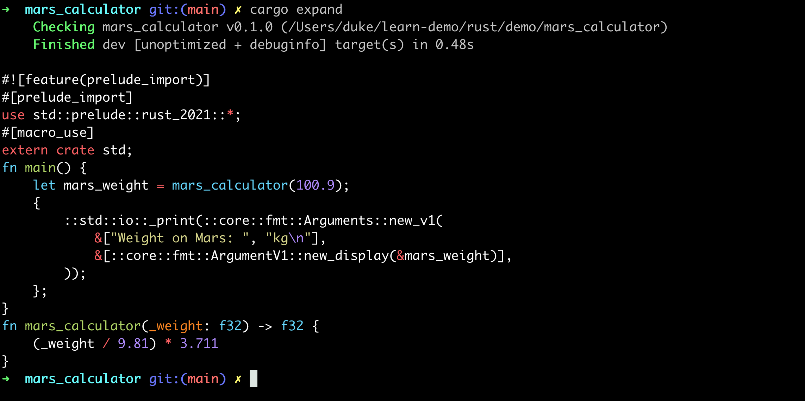

2.calculator
计算器Calculator
数据类型：
- u8:1字节
- char：4字节
- usize：8字节

创建工程
cargo new mars_calculator
编写main.rs如下：
fn main() {
// 明确类型(不建议这样做)
// let mars_weight: f32 = mars_calculator(100.9);
// 自动推导返回类型(推荐方式)
let mars_weight = mars_calculator(100.9);
println!("Weight on Mars: {}kg", mars_weight);
}
fn mars_calculator(_weight: f32) -> f32 {
(_weight / 9.81) * 3.711
}
运行：

安装expand
println是一个宏（Macro）定义，可以将它的代码展开
cargo install cargo-expand
运行：
cargo expand

默认immutable
- 所有的变量在rust中，默认都是immutable的，即定义之后不能修改
- 如果想修改需要使用关键字mut（如果不加mut会报错）
fn main() {
// let mars_weight = mars_calculator(100.9); // error
let mut mars_weight = mars_calculator(100.9);
mars_weight = mars_weight * 1000.0;
println!("Weight on Mars: {}kg", mars_weight);
}
fn mars_calculator(_weight: f32) -> f32 {
(_weight / 9.81) * 3.711
}
命令行输入
use std::io;
fn main() {
println!("Enter a weight:(kg)");
// 1. 创建一个string类型
let mut input = String::new();
// 2. 读取数据，写入到input中，这里的&表示传递引用，即直接修改input的值，而不是副本拷贝
// 3. unwrap是对返回值Result<T, Error>的处理，逻辑为：
// a. 如果执行成功，则正常返回
// b. 如果执行失败，则程序终止
io::stdin().read_line(&mut input).unwrap();
// 4. 此处对输入（字符串）进行去除空格处理，并且自动转换成目标数据类型（f32)
let weight: f32 = input.trim().parse().unwrap();
println!("weight: {}", weight);
// 5. 此处为debug打印输出，目的是查看weight的数据类型，会发现是字符串，如："123"
dbg!(weight);
println!("input: {}", input);
// let mars_weight = mars_calculator(100.9); // error
let mut mars_weight = mars_calculator(weight);
mars_weight = mars_weight * 1000.0;
println!("Weight on Mars: {}kg", mars_weight);
}
fn mars_calculator(_weight: f32) -> f32 {
(_weight / 9.81) * 3.711
}
测试
cargo run
其他
支持gdb调试，与C++几乎完全一致